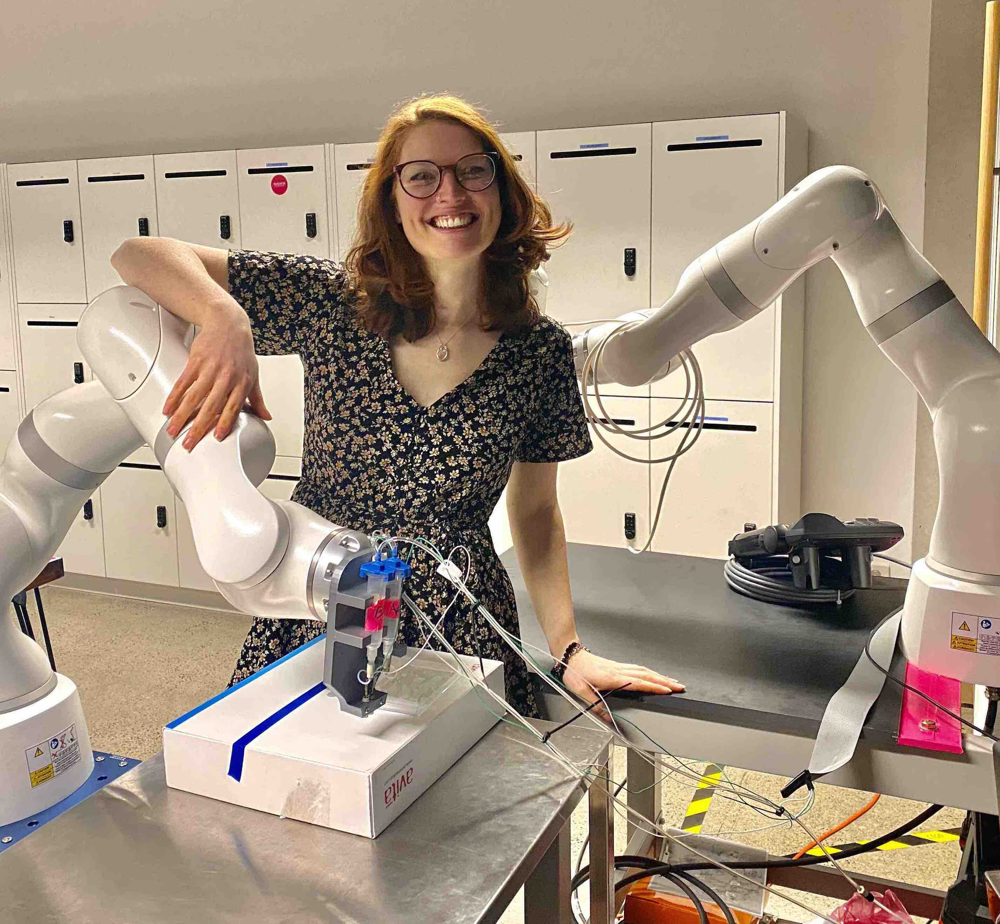
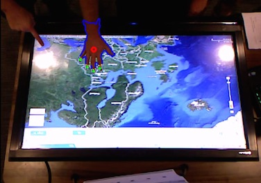

 Hi! I'm Deanna, Australia's 2022 Young Engineer of the Year.
I use robotics and electrical engineering to improve lives, from educational robots for special needs students, to 3D bioprinters for cancer researchers.
Through my work I help people of all ages to see the altruistic applications of STEM.
Here you can find out more about my journey, and get insight into how you can do the same, yourself.
But this page doesn't talk!
Hear me speak at one of my upcoming events, and
join the thousands staying updated (and hopefully inspired) by following me on social media or my mailing list:
The Ligō skin-printing robot for burns patients
- Sydney, AU 2022
- Medical Devices Fund awardee
- KUKA Innovation Award Finalist
Current treatment of full-thickness burns takes dangerously longer than necessary, and still doesn't allow survivors to regain healthy, functional skin.
The Ligō device is a novel 3D bioprinting platform set to change that, for the good of patients!
The Ligō robot prints tiny droplets containing the patient's OWN skin cells along with optimized biomaterials into the wound directly in the operating room - three weeks earlier than otherwise possible, thanks to using Inventia's patented 3D bioprinting technology.
This, incredibly, stimulates the body to heal itself, and restore healthy skin that improves the quality of life for skin injury survivors.
It's developed in Australia, made possible by prestigious grants and a hugely interdisciplinary team including biomaterials expert Prof Gordon Wallace and world-renowned burns surgeon Prof Fiona Wood. I got into this role through friend of mine Senior Biomedical Engineer Zack Artist, and for two years we were the founding engineers for the clinical redesign.
As the robotics/electrical lead and system integrator for the KUKA LBR Med robot, I synchronised robot movement with precision printhead ejection; allowed hand-guided wound demonstration from surgeons; and leveraged LBR Med features for risk mitigation, while working closely with industrial designers, medical device standards experts, and end-user clinicians for overall product design that will receive FDA approval.
As employee #2 at the "startup within a startup", I wore many hats including pitching to funding sources, submitting patent applications, sourcing/contracting medical device consultants, and running feedback sessions with clinicians.
The RASTRUM™ 3D bioprinter for cell biology research
- Sydney, AU 2020
- Inventia Life Science
- World Changing Ideas winner
- Nine News segment
Biomedical researchers traditionally analyse cell behaviour in 2D replicas, such as cells growing in a petri dish.
This is not entirely representative of how cells exist in our bodies in real life, however.
Cell cultures exist in 3D in the body, not 2D.
At Inventia Life Science, we have developed the Rastrum 3D Bioprinter: a 3D printer for living cells.
This work is driven by the needs of biomedical researchers and tissue engineers, so that they can analyse, for example, cancer tumours in 3D, and test how they respond to different medicines/treatments.
My firmware and test procedure enhancements allowed for phased rollouts of hardware upgrades to the fleet of RASTRUM bioprinters that’s used by biomedical researchers worldwide on novel treatments of cancers, placenta disorders such as preeclampsia, and other illnesses.
The ROS 2 open source framework for roboticists worldwide
- Silicon Valley, US 2016-18
- Variety of the work
- Example feature
- SF Mini PyCon talk
The Robot Operating System (ROS) is a software framework that fosters collaboration among the robotics community by enabling roboticists to leverage each other’s algorithms and contribute to a global ecosystem. It's used by tens of thousands of roboticists worldwide on applications ranging from search and rescue missions, to penguin conservation in Antarctica, to the Robonaut 2 on the International Space Station. At Open Robotics (formerly Open Source Robotics Foundation), we also develop Gazebo, a free and open source multi-robot simulator that removes the need for owning (or damaging!) expensive hardware during robotics development. Originally developed for researchers but also widely used in industry, education and by hobbyists and artists, these tools are lowering the technical and financial barriers to robotics for everyone.
I contributed core features for ROS 2 distributions beta1-3, Ardent, Bouncy (see celebratory gif!), and Crystal including Logging/loggers (C, C++, Python), amcl port (C++), and "ROS time" implementation (Python, C++).
I co-maintained the ROS Wiki (moin moin based), ROS 1 RViz package (Qt C++): reviewing community contributions.
As "build farmer" I developed features for the ROS 2 buildfarm and Jenkins continuous integration infrastructure (e.g. managing Docker containers), and as "build cop" I excelled in identifying the root-cause of regressions the extensive test suite uncovered.
I led the NIST-funded ARIAC competition with Gazebo-based simulated challenges (e.g. dropping a part) and automated scoring. I set up the infrastructure that allowed competitors to switch between UR5 and KUKA IIWA arms and different sensor placement through a YAML file, and would build and evaluate their bash script submission via automated Docker images.
I was a key community figure as ROSCon 2016-2018 Program Committee, keynote speaker, and Diversity Scholarship Manager.
The CoWriter robotic partner for children with learning difficulties
- Lausanne, CH 2014
- Code
- Media coverage
- AAAI'15 best video
- HRI'15 publication

Learning-by-teaching has been shown to help children with learning difficulties catch back up to their peers in a range of areas. At the CHILI lab at EPFL we were interested in exploring the applications of learning-by-teaching to handwriting education. The only problem is, who can a child teach if they are the lowest in their class? We developed a robotic learning partner that can be programmed to be bad at writing so that children can play the role of the teacher, giving it corrections so that its writing improved. I developed the novel handwriting learning algorithm and simulated robotic writing system and, with the help of Séverin Lemaignan, conducted field trials with 45 children aged 6-8.
Paper published in ACM/IEEE Human-Robot Interaction 2015 conference proceedings.
Best video award at the AAAI Conference on Artifical Intelligence 2015.
Simulated robotic handwriting

Humanoids such as the Nao have been shown to be able to write, but are limited by their restricted mobility. Meanwhile, there are various other more expensive robots which are capable of writing well, but are not necessarily appropriate for human-robot interactions. At EPFL we needed both: a robot suitable for interacting with children (the Nao), also capable of writing. By adding the additional component of a syncronised tablet, I was able to create a system for simulated robotic handwriting that is not just cheaper but also more appropriate for interaction purposes than expensive robots that can write well. The synchronised tablet displays writing which matches the robot's movements, fooling even adults.
Open source contributions at the Recurse Center
- NYC, US 2015
- OpenCV contrib.
- Eigen contrib.
- Python3 contrib.
- The Recurse Center
The Recurse Center is like a writers' retreat for programmers. I took advantage of the great opportunity for collaboration to learn Haskell with/from others, and also the contribute to some C++ libraries that I've used in the past.
Contributions merged upstream into Eigen and OpenCV for bugfixes, regression tests, and small features.
We also made lots of stupid projects like this terminal command git tableflip that includes a haiku.
I've since worked as a full-time open source developer and maintainer on ROS! And have contributed to Python itself.
USB stethoscope for diagnosing pneumonia in under-resourced settings
- Melbourne, AU 2012
- TED talk
Healthcare workers in under-resourced settings commonly do not have time to accurate calculate the respiratory rate of patients, if at all. At the University of Melbourne we developed, with the help of Jim Black who has worked as a physician for a decade in Mozambique, a device to assist with the diagnosis of pneumonia by taking advantage of healthcare workers' Java-enabled phones. I worked on the peripheral electronics and USB communication between devices.
As part of TED's Worldwide Talent Search I presented the work as a finalist for TED2013.
Brain-computer interface control of an automotive experience simulator
- Brisbane, AU 2011
- AutoUI'12 publication
- 'Scope' episode
- Press release
A brain-computer interface to control the automotive experience simulator at CARRS-Q (used for road safety research). The EEG equipment detects unconsciously-generated visually-evoked potentials when users look at lights flashing at different frequencies, and controls the simulator according to what the lights represent (steering, acceleration, e.g.). My work partner and I designed and implementated the electronics, signal processing, and networking.
Paper published in Association for Computing Machinery Automotive UI conference proceedings, 2012.
National Australian television coverage on a school-aged children's science show, 2012.
Computer vision-based uninstrumented multi-touch surface
A library that can convert any surface into a multi-touch interface using an RGB-D camera. The library provides tools for detecting hands, fingertips and gestures to use them for generating mouse and keyboard events, amongst others. For doing so, the library implements image processing algorithms such as: statistical noise cancellation, Kalman filtering, homography transformations, Fourier descriptors, robust centroid estimation. These algorithms were implemented using OpenCV and Boost libraries.
Professional
- Senior Robotics Engineer on the Rastrum 3D Bioprinter and Ligō medical device, Inventia Life Science (2020 - 2022)
- The STEMxChange Engineering Ambassador and engineering/discrete maths Class Tutor, UTS (2020 - 2022)
- Software Engineer on the ROS development team, Open Source Robotics Foundation (2016 - 2018)
- Robotics and Computer Vision Researcher, CHILI Lab EPFL (2014)
- Graduate Electronics Engineer, ISSNIP Lab University of Melbourne (2012)
- Brain-computer Interface Researcher, SAIVT Lab QUT (2011)
- Urban Informatics Electronics Project Officer, National ICT Australia (2010)
- Market Operations Performance Project Officer, Australian Electricity Market Operator (2009)
- Network Demand Management Project Officer, ENERGEX (2008)
- Tutor of various engineering and mathematics subjects, QUT and University of Melbourne (2008 - 2012)
- Engineering Ambassador: QUT Extreme Engineering High School Outreach Program (2010, 2011)
Voluntary
- Medical Equipment Technician: Engineering World Health Nicaragua (2015)
- Course Representative: Erasmus Mundus European Masters of Computer Vision and Robotics (2013)
- Oceania Chapter Representative: Erasmus Mundus Association (2013)
- Manager: Rural and Regional Program, Robogals Global (2012)
- President: QUT Women in Engineering Club (2011)
- Female Student Representative for Faculty of Science and Technology: QUT Student Guild (2011)
- Events Co-Ordinator: QUT Women in Engineering Club (2010)
- President: QUT Maths Student Society (2009, 2010)
- Chair: QUT Engineering Systems Student-Staff Liaison Committee (2009)
- Supervisor: Session leaders of peer-instructed engineering tutorials at QUT (2009)
- Electronics Engineering Mentor: Macgregor State High School (2010)
- Ambassador of QUT Mathematics to Xiamen University, China (2009)
- Volunteer Duty Tutor: QUT Maths Access Centre (2008, 2009)
- Session Leader: QUT Orientation Week, Faculty of Science (2008)
Robotics
- Probabilistic robotics HD Postgrad
- Autonomous robotics HD Postgrad
- Real-time control HD Postgrad
- Robotics project HD Postgrad
- Masters thesis HD Postgrad
- Computational intelligence for control and embedded systems HD
- Controls, systems and applications HD
- Modern control systems HD
- Instrumentation and control HD
Computer vision
- Multi-sensor fusion and multi-object tracking HD Postgrad
- Scene segmentation and interpretation HD Postgrad
- Advanced image analysis HD Postgrad
- Medical image analysis HD Postgrad
- Visual perception D Postgrad
- Software engineering D Postgrad
- Introduction to image processing HD Postgrad
Mathematics
- Computational mathematics I, II, III HD
- Partial differential equations HD
- Statistical modelling I, II HD
- Time series analysis HD
- Applied statistics I, II HD
- Statistical inference D
- Advanced calculus HD
- Differential Equations HD
- Linear algebra HD
- Mathematical sciences I, II HD
- Introduction to scientific computation HD
- Applied mathematics HD Postgrad
Electrical engineering
- Communication environments for embedded systems HD
- Real-time computer based systems HD
- Microprocessors and digital systems HD
- Signals, systems and transforms HD
- Linear circuits and systems HD
- Power systems and machines D
- Digital communications HD
- Sensors and digitisation HD Postgrad
- Digital signal processing HD Postgrad
- Electrical engineering HD
- Introduction to telecommunications D
- Introducing professional learning HD
- Engineering physics HD
- Engineering mechanics D
- Introduction to electronics HD
- Engineering problem solving HD
- Introduction to design and professional practice HD
- Advanced design and professional practice HD
- Work integrated learning HD
- Undergraduate thesis I, II HD
Awards & honours
2023
- QUT Outstanding Young Alumnus: from 100,000 graduates
- Engineers Australia ITEE David Robinson Award - National
2022
- Engineers Australia Young Engineer of the Year - National
- International "50 Women in Robotics" list
- KUKA Innovation Award Finalist for Ligō
2021
- Medical Devices Fund admission for Ligō
2016
- Google Code Jam to I/O Competition: 78th world-wide
2015
- AAAI Conference Best Video Award - CoWriter
2014
- Runner-up in IET Present Around the World Competition, Zurich
2013
- Google Anita Borg Memorial Scholarship
- Delegate at the MIT-founded International Development Design Summit, Zambia
- Google-sponsored attendance at the Grace Hopper Celebration of Women in Computing
2012
- Finalist TED2013
- The Erasmus Mundus Masters Scholarship for Non-European Students
- Shoestring Media Young & Influential List
- University of Melbourne JH Mirams Scholarship
2011
- Finalist for the 2012 Australian General Sir John Monash Scholarship
- University Medal for Top 0.5% of Graduating Students
- Engineers Australia Electrical Branch Medal
- QUT John Kindler Memorial Medal
- Winner of the 2011 Aurecon Compassion Challenge
- The QUT Dean's List of Students with Excellent Academic Performance - Engineering
2010
- Delegate at the Brightest Young Minds Summit
- The QUT Dean's List of Students with Excellent Academic Performance - Engineering
2009
- Finalist for the 2009 Queensland Newspapers Pride of Australia Young Leader Medal
- The 2009 QUT Alumni Student Leadership Excellence Award
- Ambassador of QUT Mathematics to Xiamen University, China
- Winner of the 2009 Australian Power Institute Power Engineering Essay Competition
- The QUT Head of School's Award for Excellence in Mathematics
- The QUT Dean's List of Students with Excellent Academic Performance - Engineering
- The QUT Dean's Merit Award - Science
2008
- The Australian Power Institute Power Engineering Bursary
- Acceptance into the Golden Key International Honour Society
- The QUT Head of School's Award for Excellence in Mathematics
- The QUT Dean's List of Students with Excellent Academic Performance - Engineering
- The QUT Dean's Merit Award - Science
2007
- The QUT Women in Engineering Scholarship
- The QUT Statistics Encouragement Industry Prize
- The QUT Head of School's Award for Excellence in Mathematics
- The QUT Dean's List of Students with Excellent Academic Performance - Engineering
- The QUT Dean's Merit Award - Science
2006
- The Griffith University Logan Campus Medal
Non-professional projects
Medical equipment technician
- Juigalpa, NI
- 2015
- Engineering World Health
Two months repairing medical equipment in rural Nicaragua, in Spanish. My work partner and I visited 3 health centres and the regional laboratory in addition to our assigned hospital in Juigalpa, due to the relationship we established with the local Ministry of Health office. We were able to put more than 40 pieces of equipment back into service, the majority of which laboratory equipment (sterilisation ovens and centrifuges, for example).
Engineering ambassador
- Australia, Spain, Scotland
- 2008 - current
Speaking about the potential for technology to advance society has long been a hobby of mine, in an attempt to improve society's perception of science and engineering careers. My passion comes partly from the fact that this is something that, personally, I did not realise myself until I was well into my own engineering degree. In addition to taking part in formal school outreach programs and science/robotics competitions, I have also been an invited speaker at a range of events with young adults as the audience, such as high school graduations, panels, university Open Days, and Engineering Week events.
In 2012 as the manager of the Robogals Rural and Regional program, I hosted a training weekend for female university students from across Australia to act as ambassadors for engineering. In the following months these ambassadors went on to give presentations to more than 500 school students in remote areas, making an impact far larger than I could alone.
International Development Design Summit delegate
- Lusaka, ZM
- 2013
- Intl. Development Innov. Network

As participants at the MIT-founded IDDS in Zambia, my team worked with the community members of Chitambala Village, Mumbwa to identify the need for food dehydrating processes that were more sophisticated than the existing methods in place for drying vegetables. The area had an abundance of fruit going to waste each rainy season that we discovered could be preserved for consumption in the dry season to improve children's nutrition. We gained experience working with culturally diverse and multi-disciplinary teams, local creative capacity building, developing prototypes and business models, and collecting feedback from community members.
Fundraising events organiser
- Australia, Scotland
- 2011 - 2013
- One Girl
As the highest fundraiser for One Girl's inaugural Do It In A Dress campaign in 2011, I was able to raise more than US$4,000 for the education charity. To date, through sponsorship assisted by various events and media coverage, 22 high school scholarships in total for girls in Sierra Leone have been funded. Furthermore, I have inspired student groups at QUT to participate in the campaign, funding more than 50 scholarships in 2015 alone.
Travel (48 countries overall)
- First time
- >3 weeks duration
2023
- Spain
- Philippines
- India
- Portugal
- Morocco
- United Arab Emirates
- France
- USA
- Greece
- Thailand
2022
- Germany
- Poland
- Netherlands
- Portugal
2020
- 5km from my home
2019
- Argentina
- Botswana
- Greece
- France
- Indonesia
- Japan
- Kenya
- Madagascar
- Poland
- Portugal
- Reunion
2018
- Argentina
- Bolivia
- Chile
- Costa Rica
- Spain
2017
- Canada
- Poland
2016
- Colombia
- Indonesia
- South Korea
2015
- Argentina
- Brazil
- Guatemala
- Ireland
- Netherlands
- Nicaragua
- Northern Ireland
- Uruguay
- Italy
- Scotland
- Spain
- Switzerland
- United States
2015
- Argentina
- Brazil
- Guatemala
- Ireland
- Netherlands
- Nicaragua
- Northern Ireland
- Uruguay
- Italy
- Scotland
- Spain
- Switzerland
- United States
2014
- Denmark
- Laos
- Malaysia
- Myanmar
- Portugal
- Sweden
- Switzerland
- Vietnam
- France
- Spain
- Germany
- Thailand
2014
- Denmark
- Laos
- Malaysia
- Myanmar
- Portugal
- Sweden
- Switzerland
- Vietnam
- France
- Spain
- Germany
- Thailand
2013
- Scotland
- Spain
- Thailand
- United States
- Zambia
- France
2012
- Austria
- Belgium
- England
- France
- Germany
- Italy
- Switzerland
2009
- China
2006
- Japan
Highlights as an award-winning Engineering Communicator
To invite Deanna to talk at your event/school/club, write to speaking@deannahood.com.au
Finalist for TED 2013
- Standing ovation at official TED.com event
- >4000 online views
Coverage from blog.ted.com:
"Who were the must-see speakers of the night, who you hope TED fans will watch on the TED Talent Search website?"
"Deanna Hood. Deanna spoke about using simple cheap and already-in-existence technology — the mobile phone — to support health care workers in the developing world."
2,000+ students inspired as an Engineering Ambassador
- Various NGO, government and university programs
- 700+ girls inspired in person, + online events

"The part of the day that influenced me the most was when Deanna Hood talked to us about her career in engineering and how she helped so many people, such as the disabled, through her job. Deanna said that she went to university when she was only 15 and had no clue what engineering even was. She did know that her favourite subject was maths and she loved problem solving. This clued me into engineering as a career as my passion is maths and not leaving a problem unsolved... I learnt so much about the many branches of engineering and how they can help people in so many more ways than I thought possible." - Libby, Year 9
Winning video: Association for the Advancement of Artificial Intelligence
- My own AI algorithm, and robotic "writing" system: 300 research citations
- Reuters coverage
Coverage from Sydney Morning Herald:
"At just 23, Deanna Hood is hoping her work in artificial intelligence can help change the way robots are used in classrooms.
Her fascinating work combines a relatively cheap humanoid robot and a tablet with the idea that kids learn better when they're teaching...
The secret to making it work at a price that hopefully won't keep schools locked out was a little bit of trickery. Robots with fine motor skills advanced enough to actually draw on a tablet were prohibitively expensive, so the team used a cheaper robot and synced its movements to the tablet to mimic writing instead."
Appearance on national science TV show Scope
- Estimated 14,000 viewers + ACM publication
- Humanitarian applications of electronics and control systems!
Scope is a fast, funny and informative children’s science show produced in association with the CSIRO. Scope was created to demystify the world of science and technology, and make it relevant, accessible and above all fascinating to a young audience.
Topic: brain-control of the CARRS-Q automotive simulator with applications for people living with paralysis.
Selected upcoming events
Engineers Australia Biomedical College: 3D bioprinting for regenerative medicine: Dec 14th, Sydney/live-streamed
Engineers Australia Experience It! engineering immersion for school-girls: Oct 17th, Sydney/live-streamed
The Hustle mentoring launch: Nov 11th, Sydney
QUT Industry Showcase: Nov 23, Brisbane
TBC: KUKA LBR Med robot for medical device startups